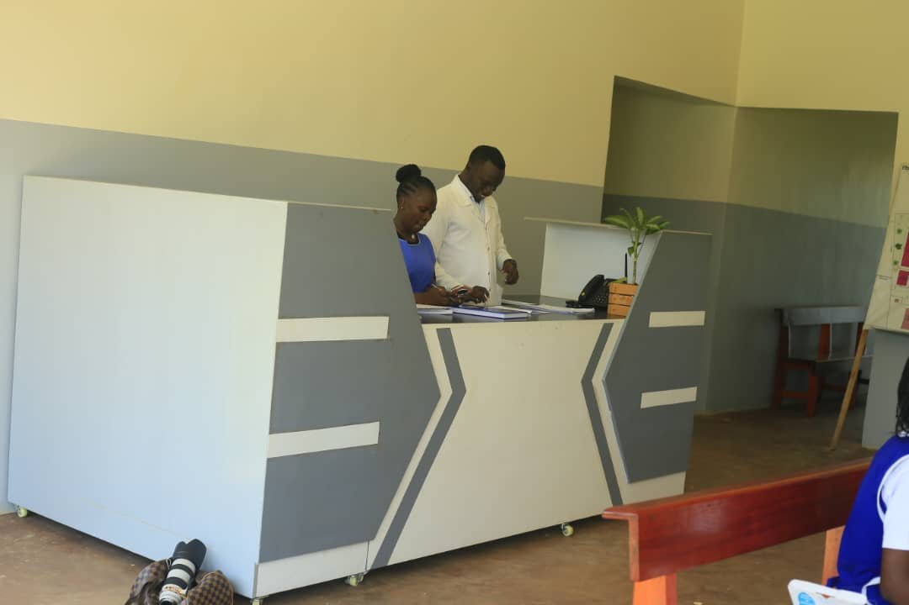
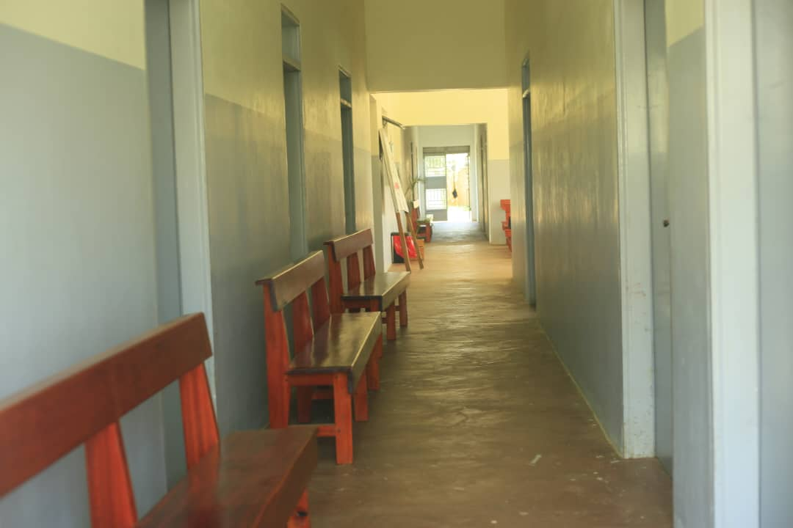
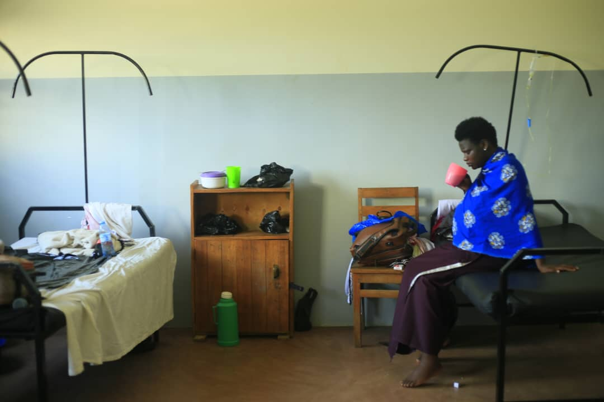
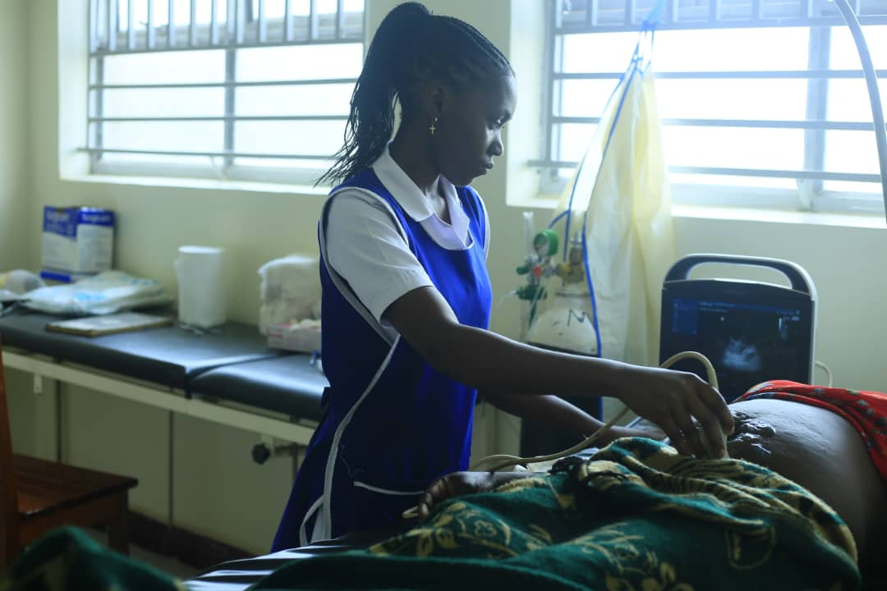
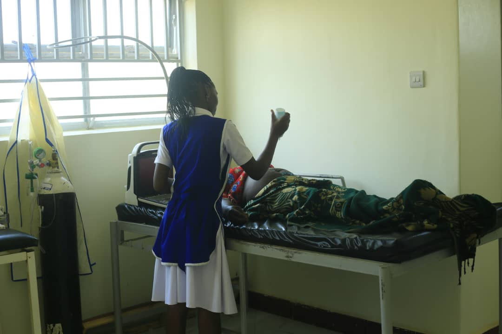
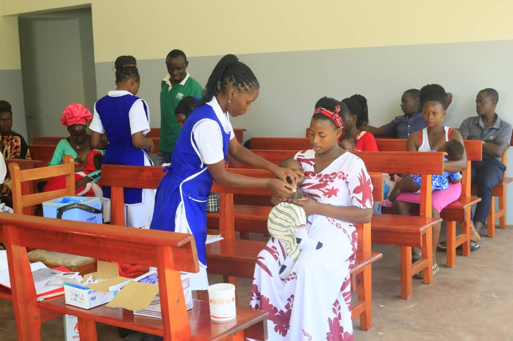
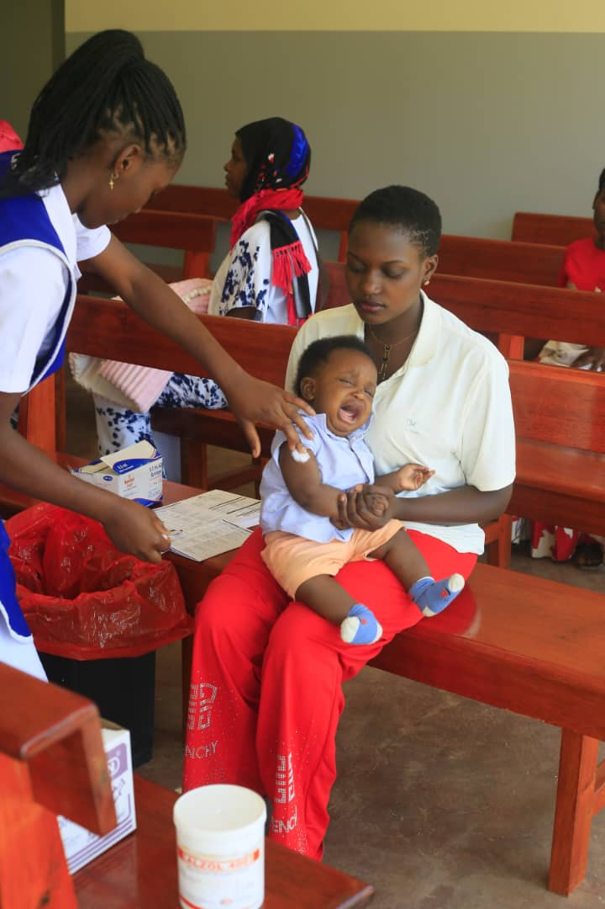

Providing quality healthcare to the Ssanje community and surrounding areas since 2003.







St Jude Ssanje Health Centre III is located in Kyotera District, Kasasa Sub-county, Ssanje Parish.
It is situated 13.5 kilometers (13½ km) from Kyotera town along the Mutukula Road.
The facility serves the local community and extends services to nearby areas.
The health centre was established in 2003 to improve and maintain health care services for the Ssanje community and surrounding areas. Rev. Fr. Edward Nsanziiro spearheaded the initiative in collaboration with the Ssanje Catholic Parish and the Masaka Diocese.
It operates as part of the Masaka Diocesan Medical Services.